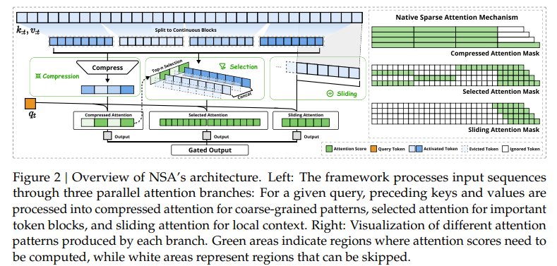
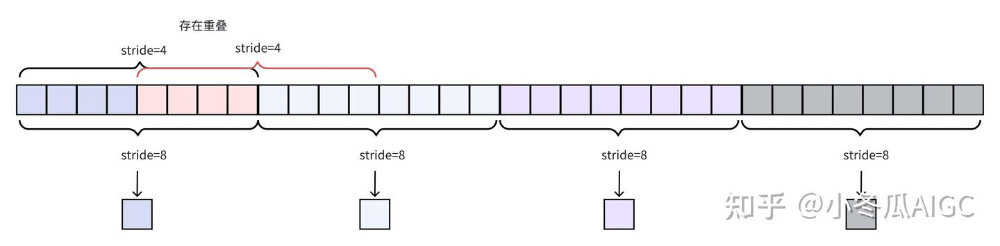
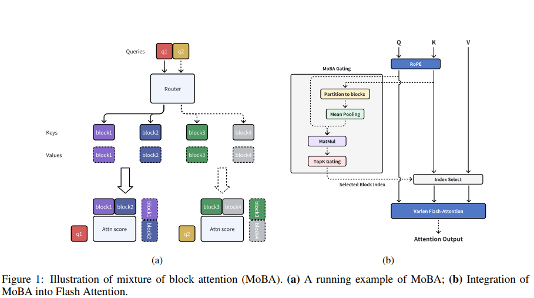
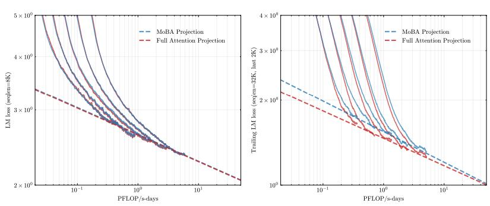
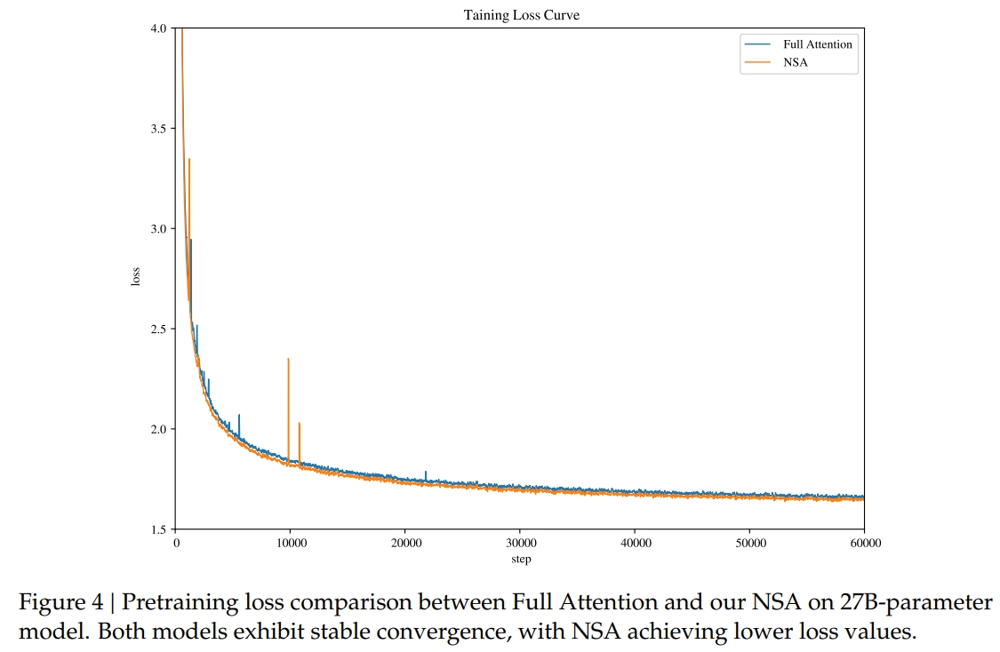

MoBA vs NSA
Kimi公开了他们处理长文的秘密了。团队提出了MoBA (Mixture of Block Attention) ，解决了传统注意力机制在处理长文本时的效率问题。
DeepSeek 发布了一篇新论文，提出了一种改进版的注意力机制 NSA（Native Sparse Attention），加上还有创始人兼 CEO 梁文锋亲自参与。
由于MoBA比NSA更简单，于是我们循序渐进先介绍NSA。
这两个都主要对KV进行优化。
NSA

其中定义了三种注意力：压缩（cmp)、选择（sle)、滑窗（win），并最后使用门控来简单汇聚，$g^{cmp}o^{cmp}+g^{sle}o^{sle}+g^{win}o^{win}$。
压缩注意力
压缩注意力的本质是将一段序列的KV压成一个KV。

选择注意力
论文选择将这部分和压缩注意力结合起来。
即
1 | |
滑窗注意力
这部分是用来捕捉临近的kv片段。
$$
\tilde{K}{t}^{\mathrm{w i n}}={\bf k}{t-w : t}, \tilde{V}{t}^{\mathrm{w i n}}={\bf v}{t-w : t}
$$
汇聚
前面我们已经介绍过$g^{cmp}o^{cmp}+g^{sle}o^{sle}+g^{win}o^{win}$
它实际上使用了 MLP和 sigmoid，即
1 | |
MoBA
也正如苏神在知乎上所说，“如果读者对比过NSA和MoBA，估计都有种MoBA是NSA的简化版的感觉：NSA用了MLP来压缩block，MoBA直接用Mean Pooling；NSA用另一块压缩的Attention来学block select，MoBA直接去掉了这部分。不得不说，NSA的设计是更符合一般人的想法，如果由我自己独立来设计MoBA，估计最终形式会更像NSA，因为MoBA这种极致简化的做法则更需要一点勇气（以及长时间的尝试）。”
相比NSA，MoBA更简单，block select相当于更精细的内容，但MoBA把这部分去掉了。Mean Pooling代替MLP减少了许多参数量，这让我想到了global average pooling 中指出：”One advantage of global average pooling over the fully connected layers is that it is more native to the convolution structure. Another advantage is that there is no parameter to optimize in the global average pooling, thus overfitting is avoided at this layer.“

同样地，MoBA也把KV分为若干个block。
操作也很简单和明显，我们可以看出它具体做了什么，图中的内容无需再赘述。
此外，保持自回归语言模型的因果关系很重要。
MoBA设置了不能关注未来块，另外，整个块的平均池化可能会无意包含来自未来标记的信息。未来解决这些问题，它强制要求每个token必须路由到当前块，并应用因果掩码。
MoBA也有更多的灵活性，它的参数与full attention参数相比数量不变，不增不减。这一特性启发我们进行全注意力与 MoBA 之间的平滑过渡。具体来说，在初始化阶段，每个注意力层可以选择全注意力或 MoBA，如果需要，这个选择可以在训练过程中动态更改。
当然它并不是可免训练的、即插即用的，作者指出：“MoBA没有参数是不是拿来就可以在现有模型上用? MoBA 不是一个免训练 sparse attention，虽然是无额外参数的，但是依然需要对现有模型进行Continue Training。训练中关注Trailing token loss下降情况，或者直接关注 longctx 相关 bmk 涨点情况即可“
代码:
1 | |
作者也介绍了一些心路历程，也值得一看。
MoBA VS NSA
它们都有和flash attention比较，也都达到了100%的大海捞针测试。
其中有一个有趣的是

MoBA的损失曲线一开始不如full attention，但后续逐渐重合。

而NSA则全面优于full attention。
另外，如果全用MoBA可能会有问题，所以后续需要加上几层（苏神说一层就足够）full attention。而NSA则没有这一问题。